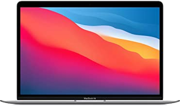

MacBook
Capacity:
256GB
All-Day Battery Life – Go longer than ever with up to 18 hours of battery life.
Powerful Performance – Take on everything from professional-quality editing to action-packed gaming with ease. The Apple M1 chip with an 8-core CPU delivers up to 3.5x faster performance than the previous generation while using way less power.
Superfast Memory – 8GB of unified memory makes your entire system speedy and responsive. That way it can support tasks like memory-hogging multitab browsing and opening a huge graphic file quickly and easily.
Stunning Display – With a 13.3” Retina display, images come alive with new levels of realism. Text is sharp and clear, and colors are more vibrant.
Why Mac – Easy to learn. Easy to set up. Astoundingly powerful. Intuitive. Packed with apps to use right out of the box. Mac is designed to let you work, play, and create like never before.
Simply Compatible – All your existing apps work, including Adobe Creative Cloud, Microsoft 365, and Google Drive. Plus you can use your favorite iPhone and iPad apps directly on macOS. Altogether you’ll have access to the biggest collection of apps ever for Mac. All available on the App Store.
Easy to Learn – If you already have an iPhone, MacBook Air feels familiar from the moment you turn it on. And it works perfectly with all your Apple devices. Use your iPad to extend the workspace of your Mac, answer texts and phone calls directly on your Mac, and more.
Fanless Design – Your MacBook Air stays cool and runs quietly even while tackling intense workloads.
AppleCare – Every Mac comes with a one-year limited warranty and up to 90 days of complimentary technical support. Get AppleCare+ to extend your coverage and reduce the stress and cost of unexpected repairs.
Environmentally Friendly – MacBook Air is made with a 100% recycled aluminum enclosure and uses less energy for a smaller carbon footprint.
Show less
New (2) from $929.00 & FREE Shipping.